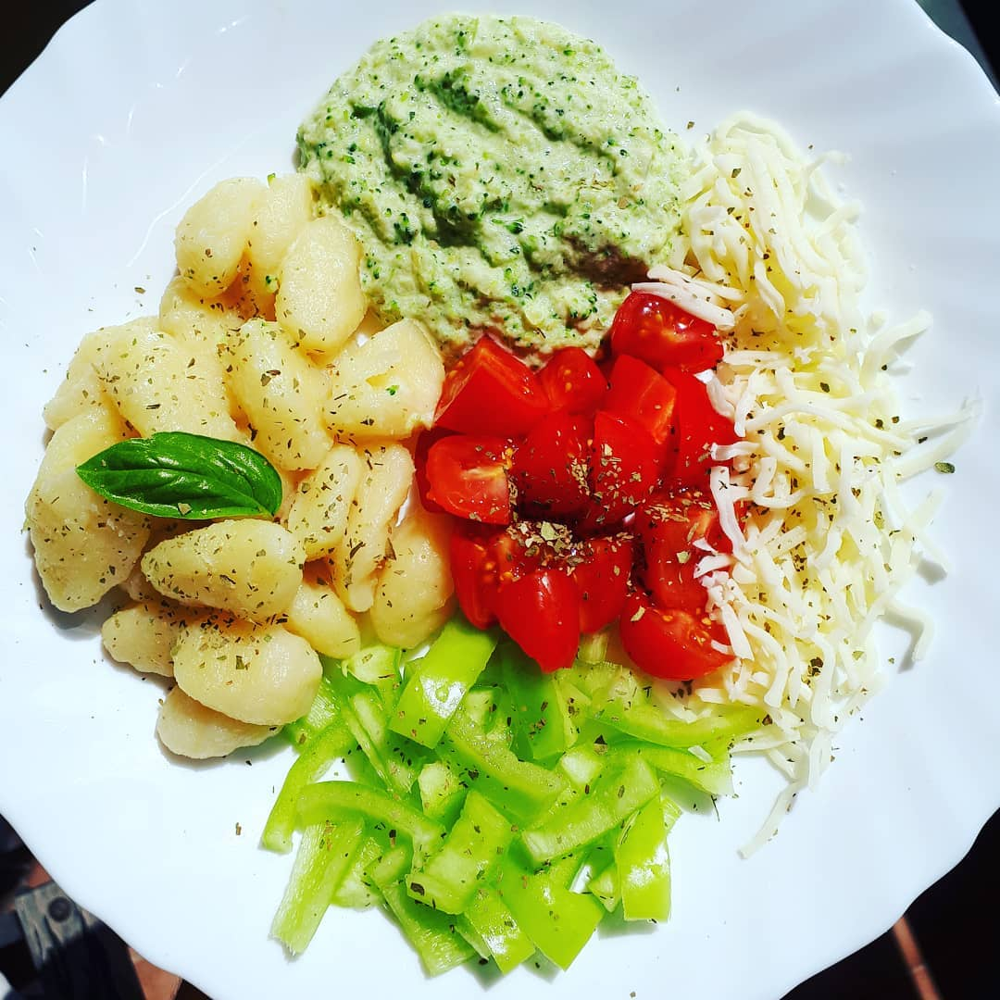

Brokolicová omáčka podľa @moniz_food — Normy Jedál
Brokolicová omáčka, parmezánové noky,strouhaná mozzarela a zelenina
Omáčka-rozmixovaná brokolice na zesklovatělou cibulku +sůl, pepř, česnek, bylinky a smetana 12% a povařit
#brokolice #noky #monizfood #mozzarela #brokolicovaomacka #zelenina #tomato #brocolli #bezmasa #vegetarians #smetana #fit